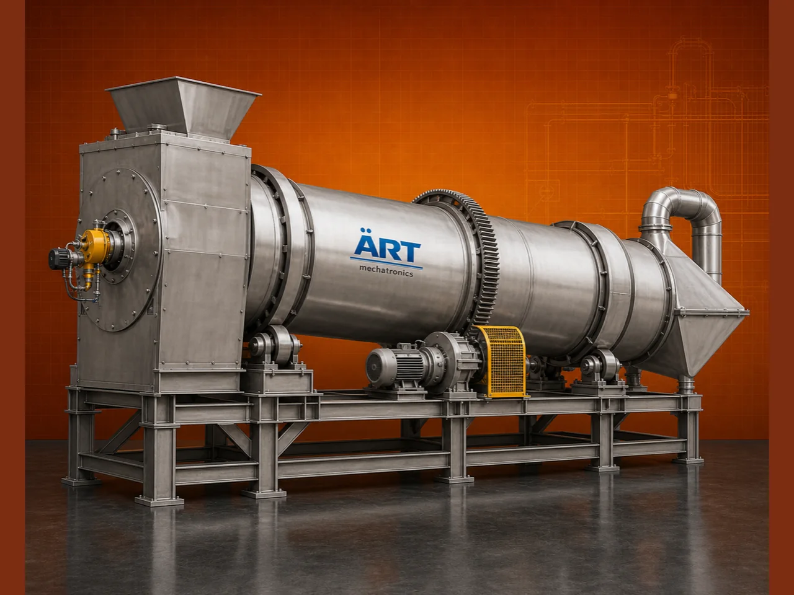

Rotary Dryer Machine (Industrial Rotary Drum Dryer for Continuous Bulk Material Drying)
A Rotary Dryer Machine, also known as a Rotary Drum Dryer, is a highly efficient industrial drying system used for continuous drying of bulk materials through a rotating cylindrical drum and controlled hot air flow.

About the Rotary Dryer, Drum Dryer
Rotary dryers are widely used in industries such as cement, minerals, chemicals, biomass, fertilizers, agro processing, and recycling, where large volumes of material need to be dried efficiently and consistently.
Designed for high throughput and continuous operation, rotary dryers provide uniform drying, reduced moisture content, and reliable performance in demanding industrial environments.
ART Mechatronics offers heavy-duty rotary dryer machines, engineered for maximum drying efficiency, energy optimization, and long-term durability.
One machine, many names
Buyers search for this equipment under many terms — we manufacture all of them:
Working Principle of Rotary Dryer
Ensures maximum heat transfer
Types of Rotary Dryers
Industries Using Rotary Dryer
🏗️ Cement & Construction Industry
- Cement raw materials
- Sand and aggregates
🏭 Mineral Processing Industry
- Limestone
- Minerals
🌿 Biomass Industry
- Wood chips
- Sawdust
⚗️ Chemical Industry
- Chemicals
- Fertilizers
🌾 Agro Processing Industry
- Grains
- Agricultural waste
♻️ Recycling Industry
- Waste materials
Features & Advantages
✔ Continuous drying operation ✔ High capacity and throughput ✔ Uniform moisture reduction ✔ Energy-efficient design ✔ Suitable for wide range of materials ✔ Robust and heavy-duty construction ✔ Low maintenance operation
Technical Highlights
- Capacity: Tons per hour (customized)
- Drying Type: Rotary drum drying
- Fuel Type: Diesel / Gas / Coal / Biomass
- Construction: Heavy-duty steel
- Drive: Motor with gearbox
- Temperature Control: Adjustable
Turnkey Rotary Dryer Solutions
ART Mechatronics offers:
- Complete rotary dryer system design
- Burner and heat system integration
- Feeding and discharge systems
- Installation & commissioning
- After-sales service & AMC
Why Choose Art Mechatronics
- Expertise in industrial drying systems
- Customized solutions for bulk materials
- High-performance and durable equipment
- Energy-efficient designs
- Proven performance across industries
Applications
- Cement Plants
- Mineral Processing Units
- Biomass Processing Plants
- Chemical Plants
- Agro Processing Units
Industries that use the Rotary Dryer, Drum Dryer
Get pricing & specs for the Rotary Dryer, Drum Dryer
Share the product, target capacity, current process and plant location. These details help our engineers discuss the right machine or line configuration.
One partner, from design to start-up
ART Mechatronics designs, manufactures, installs and commissions your Rotary Dryer, Drum Dryer solution with regional presence in India, UAE and Thailand.